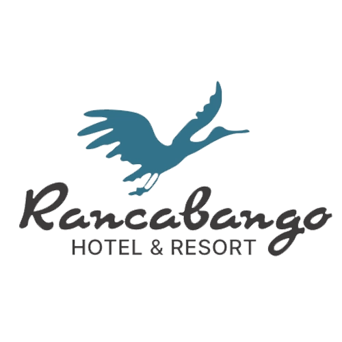
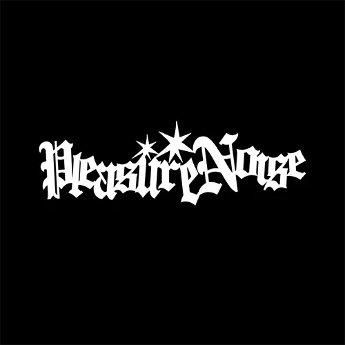
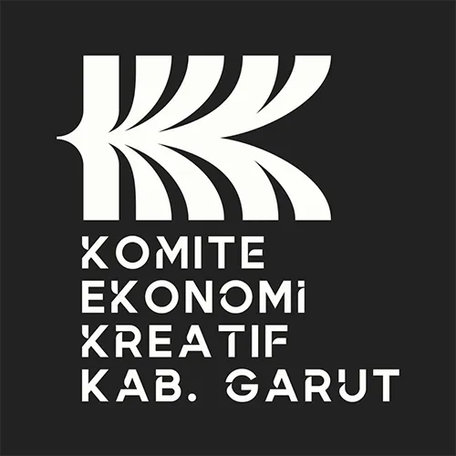
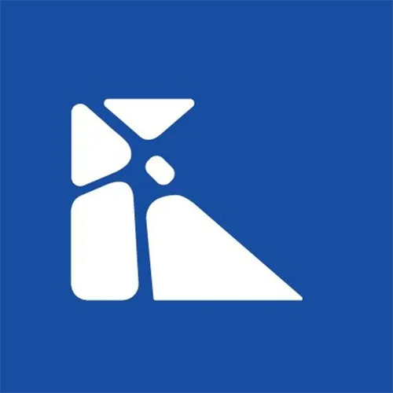
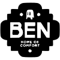
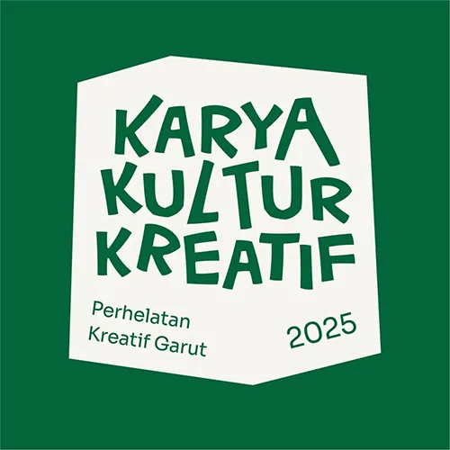

01
Strategic Mentoring
Framework KPI, financial projection, content strategy — ilmu yang biasanya hanya dimiliki CMO, ditransfer ke tim kamu.
TDMO by Moté Kreatif
Program kemitraan strategis 6 bulan untuk owner bisnis F&B yang ingin lepas dari micro-managing tim marketing — dan mulai melihat dampak nyata ke revenue.
MOTE hadir on-site setiap minggu untuk membangun kapabilitas tim marketing internal kamu — bukan mengerjakan untuk kamu, tapi membangun bersama kamu.
Masalah yang kami temui
Apakah kamu juga merasakan salah satunya?
Mereka bisa bikin konten, tapi tidak bisa mikir strategi. Tidak tahu kenapa posting konten ini, untuk siapa, dan dampaknya apa ke bisnis.
Sudah hire tim marketing, tapi tidak tahu cara evaluasi. Tidak ada KPI, tidak ada SOP, semua berjalan berdasarkan feeling.
Budget marketing keluar setiap bulan, tapi tidak tahu berapa yang kembali. Reach naik, tapi omset tetap segitu-gitu aja.
Dengan framework KPI yang jelas, tim tahu apa yang harus dicapai, bagaimana mengukurnya, dan action apa yang perlu diambil.
Owner bisa evaluasi tim dengan data, bukan feeling. Sistem berjalan meskipun owner tidak hadir setiap hari.
Financial projection yang rasional menghubungkan setiap aktivitas marketing ke dampak revenue yang bisa diproyeksikan.
Tentang TDMO
TDMO (Team Development & Marketing Optimization) adalah program 6 bulan di mana tim MOTE hadir on-site di tempat kamu — setiap minggu — untuk membangun kapabilitas tim marketing internal. Bukan mengerjakan untuk kamu, tapi membangun bersama kamu.
Di akhir program, tim kamu akan mandiri: berpikir strategis, eksekusi terstruktur, dan menghasilkan dampak yang terhubung langsung ke revenue bisnis.
Framework KPI, financial projection, content strategy — ilmu yang biasanya hanya dimiliki CMO, ditransfer ke tim kamu.
Di awal, MOTE bantu eksekusi sambil mengajar. Seiring waktu, tim kamu take over — dan MOTE jadi pengawas & sparring partner.
Sistem otomatis yang merawat database pelanggan, memberikan promo personal, dan menjawab inquiries — tanpa menambah beban kerja staf.
Cara Kerja
60 menit diskusi gratis. Kami review kondisi bisnis dan tim marketing kamu. Kalau fit, lanjut. Kalau tidak, kami jujur bilang.
GRATIS · TANPA TEKANANDeep dive 1-2 minggu. Kami audit bisnis, tim, performa marketing, dan financial baseline. Output: roadmap 6 bulan yang spesifik untuk bisnis kamu.
1-2 MINGGUProgram dimulai. Bulan 1-2: MOTE handle execution sambil transfer knowledge. KPI framework terinstal. Tim kamu mulai belajar.
BULAN 1-2Bulan 3-4: AI CRM go-live. Tim kamu mulai lead execution. MOTE shift ke optimization dan advanced mentoring.
BULAN 3-4Bulan 5-6: Tim kamu handle 90% secara mandiri. Stress test, SOP documentation, handover lengkap. Di akhir: graduation — tim kamu siap jalan sendiri.
BULAN 5-6 · HANDOVER LENGKAPFilosofi Delivery
Mentoring strategis berjalan konstan. Execution support menurun seiring tim kamu siap take over.
Di akhir Bulan 6: Tim kamu handle 90% execution. MOTE jadi sparring partner strategis.
Hasil Nyata
Beberapa hasil kolaborasi kami dengan brand F&B & leisure di Garut-Bandung.
Setelah program selesai, seluruh konten dan aktivasi marketing dihandle tim internal — tanpa MOTE.
Peningkatan signifikan dalam 5 bulan melalui strategi multi-kanal kreatif dan berbasis data.
Mencapai target revenue dalam 6 bulan, dengan occupancy rate di atas rata-rata market.
Kenapa MOTE
On-Site Engagement
Hadir setiap minggu di tempat kamu — bukan Zoom call yang gampang dibatalkan. Kehadiran fisik adalah bentuk akuntabilitas.
Marketing yang Bicara Angka
Setiap insight terhubung ke financial outcome bisnis. Bukan vanity metrics — tapi ROI, CAC, LTV, dan revenue projection.
AI yang Praktis
Implementasi AI CRM yang benar-benar mengurangi beban operasional — bukan buzzword, tapi tools yang terukur dampaknya.
Build, Not Just Run
Insentif kami selaras dengan kemandirian tim kamu. Klien yang mandiri = case study terbaik = sumber referral terkuat.
Lokal, Tapi Tidak Lokal-an
Berakar di Garut (keunggulan geografis untuk weekly visit), tapi standar kerja setara agency Jakarta. Biaya lebih rasional, kualitas tidak kompromi.
Dipercaya oleh






Mulai Sekarang
Tanpa biaya, tanpa tekanan. Kami review kondisi bisnis dan tim marketing kamu, lalu sampaikan apakah TDMO fit untuk kebutuhanmu.
Kalau cocok, kami submit proposal. Kalau tidak fit, kami jujur bilang.